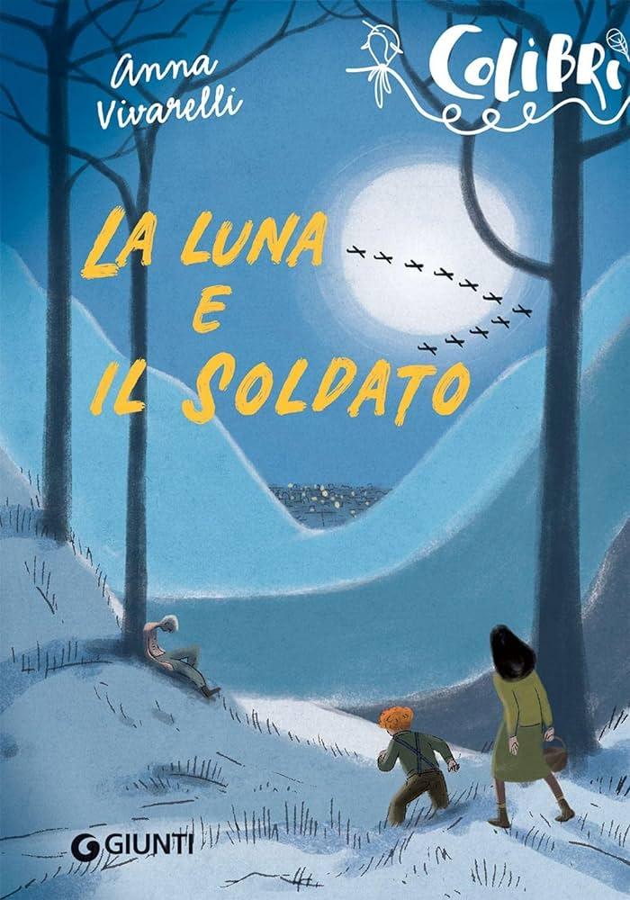

La luna e il soldato
Giunti Editore, 2022
Due romanzi brevi che narrano la Seconda Guerra mondiale dal punto di vista dei ragazzini.
LA LUNA ha per protagonista Magda, una bambina che vive le notti dei bombardamenti su Torino
e osserva la strana umanità dei rifugi antiaerei.
IL SOLDATO, ambientato sulle montagne
dell'Appennino emiliano, racconta dell'incontro dell’adolescente Gabriele con un giovane e
disperato disertore tedesco, mentre il paese è attraversato dalle colonne dell’esercito nazista in
ritirata. Questo incontro segnerà il suo passaggio all’età adulta.